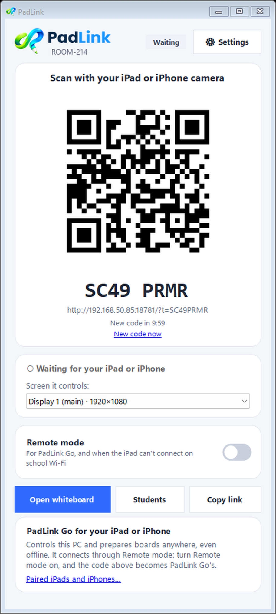
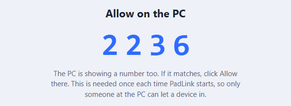
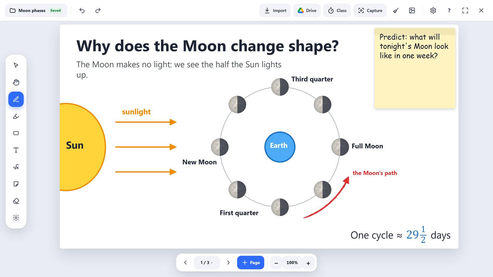

Testing PadLink
Thank you for trying PadLink! It's a free app for teachers: an iPad or iPhone becomes a remote for the classroom whiteboard, and students join on their Chromebooks to write, draw and answer polls.
1. What you need
- A Windows PC or laptop. At school it's the one connected to the board; at home any laptop is fine.
- An iPad or iPhone (best), to control the whiteboard and plan lessons.
- Optional: a "pretend student". Any other phone, tablet or laptop with a web browser can join as a student. No real class needed!
2. Set up (about 10 minutes)
Step 1. Get PadLink on the PC. On the PC, go to getpadlink.com and click Download for Windows. Open your Downloads folder, right-click PadLink.zip → Extract All, then open the new PadLink folder and double-click PadLink. Nothing to install. You'll see this window:

Step 2. Connect your iPad or iPhone. Open the Camera app and point it at the QR code on the PC. Tap the link that pops up. A number appears on the iPad and on the PC: click Allow on the PC.

Step 3. Open the whiteboard. Click Open whiteboard in the PadLink window, or tap Whiteboard on the iPad.

Step 4 (optional). Add a pretend student. On the PC, open Class tools → Names and type a few names (yours is fine). Then Class tools → Students → Open the class. A join code fills the board: on your other phone or laptop, scan it (or type the address and code), tap a name, and click Let in on the PC.

3. Ten things to try
Try them in any order. The grey tag says which devices each one needs: skip any you don't have. Don't look anything up first: we want to know if you can figure it out. Each one has a small question to notice.
- Draw on the whiteboard from your iPad or iPhone, then undo it. PC + iPad/iPhoneWas it easy to find the pen and undo?
- Add a new page, write on it, then go back to the first page. PCDid you know where you were?
- Put a picture or PDF on the board (from the iPad's Add or the PC's Import). PC + iPad/iPhoneDid the pages come out the way you expected?
- Write some text and a shape, then move one of them. PCAnything fiddly?
- Start a 1-minute timer and spin the name picker (Class tools). PCWould this work in front of a class?
- Have your pretend student draw on their own board, and look at it from the PC (See their boards). PC + student deviceWas joining easy on the student's device?
- Run a quick A–D poll (Class tools → Poll) and answer it as the student. PC + student deviceWas it clear when the poll was open and closed?
- Try a Draw poll: the student draws their answer, then show it on the board. PC + student deviceWas the drawing pad easy to use?
- Press Eyes up to pause the student's screen, then lift it. PC + student deviceDid the student understand what happened?
- Plan a board on the iPad or iPhone without the PC: add PadLink Go to your Home Screen (getpadlink.com → PadLink Go), make a board, then Send to PC. iPad/iPhone onlyDid you find your board on the PC afterwards?
Stuck? That's useful to know too. Write down where, then peek at the guide and keep going.
4. Tell us how it went
Send feedback as you go, one thing at a time, while it's fresh. Short is fine.
- In PadLink: the ? help button on the whiteboard → Send feedback, or on the PC: Settings → General → Send feedback.
- Or here: getpadlink.com/feedback.html
It opens a short form: what you were trying to do, what happened, how easy it was, and a screenshot if you have one (Windows: Windows key + Shift + S; iPad or iPhone: top or side button + volume up).
Printed the checklist? You're also welcome to send a photo of it with your notes.